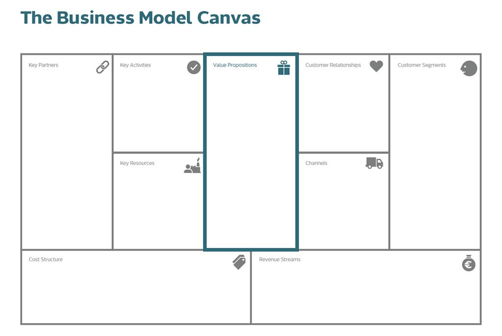

Week 1: Kruispunten

Welke overeenkomsten zie ik tussen de minor Smart Industry en de opleiding bedrijfskunde?
Tijdens de studie bedrijfskunde komen deze vier onderwerpen aan bod. Value proposition en organisatie & informatie worden uitgebreider behandeld dan de andere onderwerpen.Value Proposition
Tijdens projecten die je voor een bedrijf uitvoert is het belangrijk om bezig te zijn met de waarde propositie van een bedrijf. Een model dat ik tijdens mijn opleiding vaak heb gebruikt is het businessmodel canvas. Er worden in het BMC negen bouwstenen van verschillende aspecten van een bedrijf in kaart gebracht. Een belangrijke bouwsteen daarvan is value proposition. Waarde propositie is wat jouw product of dienst aan waarde toevoegt voor je klanten.

Smart industry kan hierin veel betekenen, als bedrijf kan je op een innovatieve manier inspelen op de behoeften van jouw doelgroep. Dankzij smart industry kunnen er zoveel mogelijk voordelen aan jouw product of dienst worden toegevoegd.
Organisatie en informatie
Tijdens studie geleerd over ERP-systemen die ervoor zorgen dat verschillende processen in het bedrijf met elkaar verbonden zijn. ERP is de samenwerking met andere bedrijven, zoals leveranciers en afnemers. Hierdoor vormen bedrijven coalities, dit heeft als gevolg dat bedrijven een betere plaats in de keten van oerproduct tot consument krijgen (connected factories).
Bij ERP II is er een samenwerking tussen ondernemingen, bij ERP is er een samenwerking binnen de eigen organisatie.
Smart industry heeft hiermee te maken, omdat bij een geavanceerder systeem de tijd om informatie te transporteren verkleind wordt.
De onderwerpen over organisatie en informatie die tijdens mijn studie voorbij zijn gekomen: KSF, KPI, betrouwbaarheid van informatie, dashboards, ERP, groei en beheer.
Human Capital
Tijdens de studie hebben we het onderwerp smart working behandeld. Een voorbeeld hiervan is de opkomst van AI bij het HR-proces.
Artikel als voorbeeld: https://thebossmagazine.com/ai-hr-management/.
Toelichting op het artikel:
Er is een mogelijkheid dat sommige banen niet meer door menselijke werknemers hoeven gedaan te worden. Maar het belangrijkste voordeel dat AI heeft, is dat het op vele manieren toegepast kan worden in organisaties. De productiviteit zal verhoogd worden en processen worden geautomatiseerd. Het automatiseren van processen zal zorgen voor een effectievere werkwijze.
AI kan ook gebruikt worden om beslissingen maken gebaseerd op algoritmes en big data, het zal zorgen voor real-time analyses. Hierdoor gaan organisaties hun markt beter begrijpen en kunnen ze op een efficiëntere manier marketingstrategieën gebruiken. De risico’s en verspilde tijd worden verminderd.
- AI helpt HR op de volgende manieren:
- HR-medewerkers hoeven niet meer alle CVs handmatig door te lezen. Dit kost veel tijd. Dankzij AI zal de data op de CVs vergeleken worden met vaardigheden en kenmerken die voorgaande werknemers in dezelfde functie hadden. Hierdoor krijgt de HR-medewerker meer tijd voor belangrijkere taken.
- Blijven leren om de juiste vaardigheden te hebben voor een functie is belangrijk. De organisatie zal suggesties van bijpassende en belangrijke training(-programma’s) moeten geven om de vaardigheden van medewerkers te blijven ontwikkelen. De informatie hiervoor krijgt de organisatie door analyses die worden gemaakt door AI.
Ook worden veel trainingen door middel van e-learning gegeven (online cursussen).
Tot slot wordt de voortgang van trainingen van medewerkers door een algoritme bijgehouden. Hierdoor kunnen er loopbaanvoorspellingen gemaakt worden voor medewerkers.Processen
Tijdens de studie leren we niet over de technische en technologische aspecten van het slimmer maken van productie. Hierbij wordt de productie zo efficiënt mogelijk gemaakt. Wij leren over zo efficiënt maken van het menselijke gedeelte in bedrijfsprocessen.
Rykun, E. (2019). Artificial Intelligence in HR Management. The Boss Magazine, 1. https://thebossmagazine.com/ai-hr-management/
Feedback
- Kwaliteit product: Je hebt duidelijk uitgelegd wat de overeenkomsten zijn tussen je opleiding en de minor.
Om een goed verhaal op papier te zetten is het van belang dat er een inleiding en slot is. Voor een lezer is het fijn dat er een korte inleiding is hoe deze blog tot stand is gekomen. Misschien kan je dit de volgende keer toevoegen, want jouw inleiding is niet al te duidelijk voor mensen die niet van de opdracht weten en jouw stuk wel lezen.
Je geeft goede voorbeelden wat betreft de kruispunten tussen je opleiding en de minor. Ook is het fijn als je de begrippen uitlegt. Daarnaast vind ik de structuur en kopjes goed verdeeld. - Kwaliteit bronnen: Niet veel bronnen gebruikt (ik wist ook niet dat dat van groot belang zou zijn). Echter wel een filmpje opgezocht om een onderwerp te verduidelijken. Misschien voor de volgende keer kan je het zelf uitleggen door middel van een kleine samenvatting van het filmpje. Hierdoor laat je zien dat je het filmpje zelf hebt gezien en kan uitleggen waar het over gaat.
Je hebt een aantal goede bronnen vermeld bij het stukje human capital. Ook verwijs je vaak naar je opleiding en dus je eigen kennis. - Kwaliteit notities: Is de tekst passend voor de lezer?
Ik denk dat de lezers (docenten) het ook interessant vinden als je informatie in de literatuur opzoekt over de onderwerpen waar je niet veel over weet.
Hetgeen dat er staat is goed, maar je kunt nog veel waarde toevoegen door onderzoek te doen naar onderwerpen waar je nog niet veel over weet.
in hoofdlijnen is het goed te reproduceren alleen door het missen van de mening over het filmpje en de interpretatie die je hierbij het niet uit te schrijven is het onderzoek op dat gebied lastig te reproduceren.
Reflectie
De verdeling door middel van kopjes beviel bij mijn klasgenoten, omdat dit overzichtelijk is en het fijner leest. Dit ga ik onthouden voor de volgende keer. Wel ga ik erop letten om aan een inleiding te denken. Dat was ik deze keer vergeten omdat ik de opdracht lastig in te vullen vond. Ik heb weinig bronnen gebruikt, omdat ik veel al uit mijn hoofd wist vanuit mijn opleiding. Volgende keer ga ik voorbeeld bronnen zoeken.
Ik had eerst een filmpje, maar die deed het niet meer. Daarom heb ik nu in het artikel een uitleg gegeven op de bron die ik heb gebruikt. Er kwam namelijk feedback op dat het duidelijker is om dingen toe te lichten dan aan de lezer over te laten. - Kwaliteit product: Je hebt duidelijk uitgelegd wat de overeenkomsten zijn tussen je opleiding en de minor.
Om een goed verhaal op papier te zetten is het van belang dat er een inleiding en slot is. Voor een lezer is het fijn dat er een korte inleiding is hoe deze blog tot stand is gekomen. Misschien kan je dit de volgende keer toevoegen, want jouw inleiding is niet al te duidelijk voor mensen die niet van de opdracht weten en jouw stuk wel lezen.